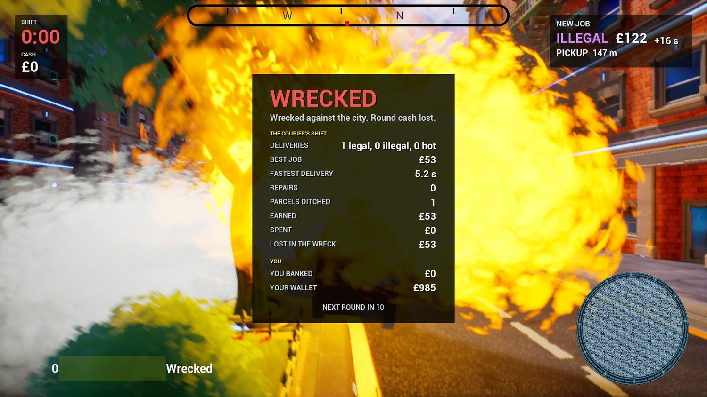
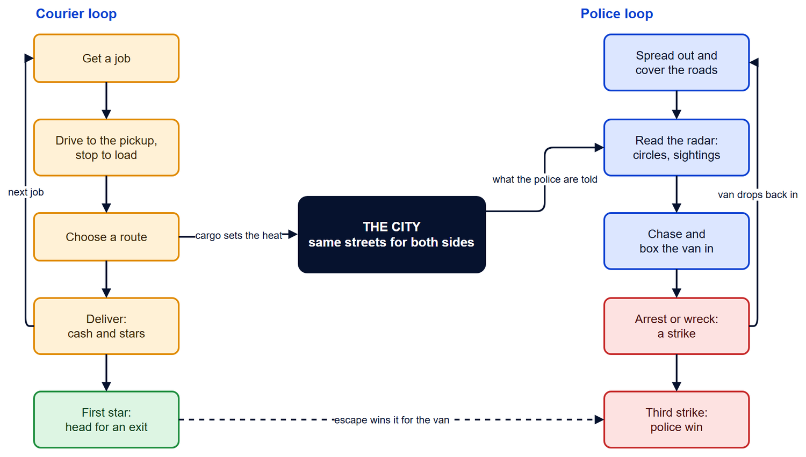
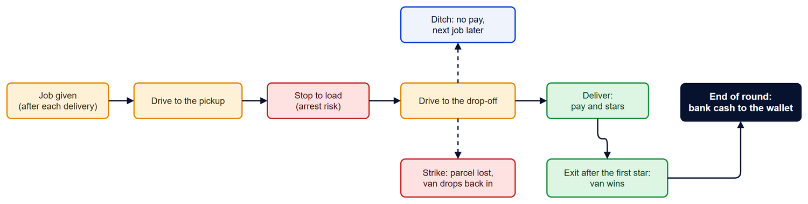
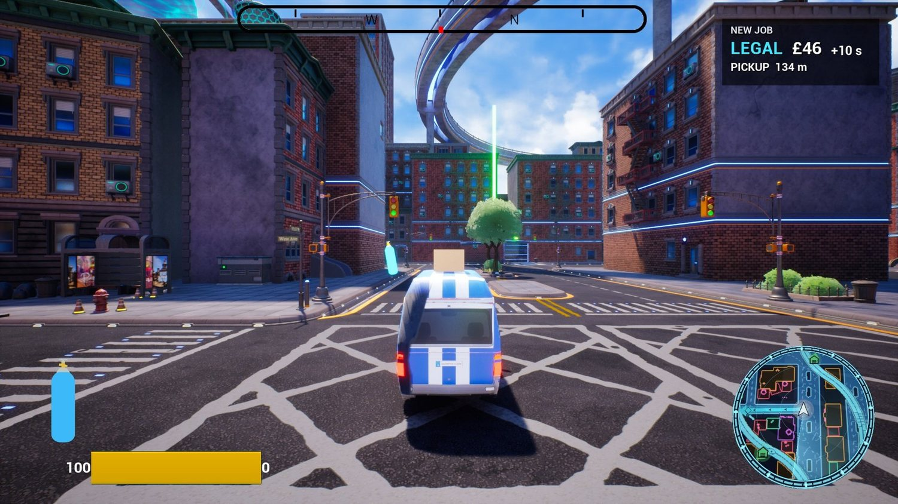
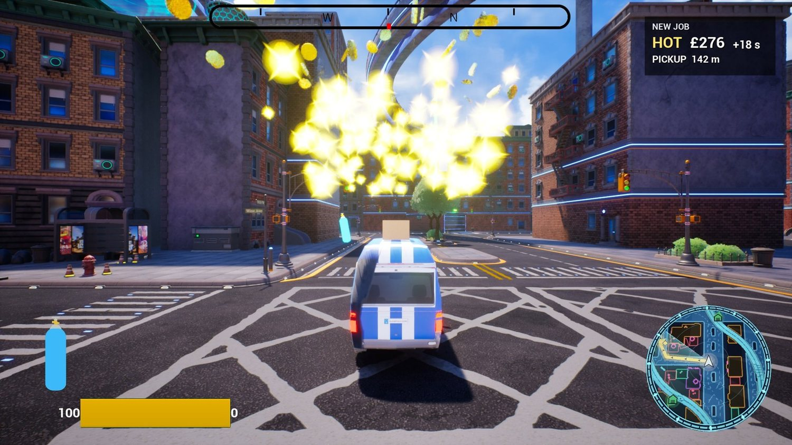
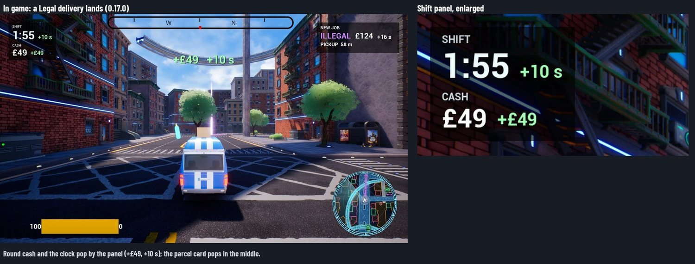

Built and playtested; strikes built, not yet in a team playtest

The results screen in an online round after a real wreck: every line is read from the host's database
What it does for play. This system is the referee. It runs the round from countdown to results and decides who wins. The van wins by escaping. The police win by catching it three times.

The two loops: everything the courier does feeds what the police are told, and every strike sends the van back in
How it works
Rule
What happens
Strikes
A wreck or an arrest is a strike. The strike count sits at the top of everyone's screen.
Third strike
Three strikes and the police win the round.
After a strike
The van loses its parcel, a cutscene plays, and it drops back in fresh at full health (see Arrests and the drop-in).
Stars
Deliveries earn stars: five stars, each needing more deliveries and paying a bigger bonus.
Exits
After the first star, two exits open at random. Both sides see them on the radar.
Escape
The van smashes through an open exit's barrier at speed. An escape cutscene plays and the van wins with its star bonus.
No hiding
A van that goes a minute without delivering is searched for on the police radar, so it cannot sit still and wait.
Results
Each player sees their own round: deliveries, best job, money earned, spent and lost.
The numbers
Value
Setting
Strikes until the police win
3
Deliveries for stars 1 to 5
2, 4, 6, 9, 12
Escape bonus
£100 to £800, rising with stars
Exits that open after the first star
2
Speed needed to smash an exit barrier
40 km/h
Searched for after no delivery for
60 s
Countdown
5 s
Results screen
10 s
From the build logParcels, economy and round flow
Everything in the build
Feature
What it does for play
Parcel bays
Spots on the street, placed by Dafydd, lit up for the courier only
One job at a time
The game rolls Legal or Illegal, so every round plays differently
Pay by distance
A long job pays more and adds more time than a short one
Stop to load
The van must stop in the bay, so every pickup with a cop behind is a gamble
Ditching
Hold a key for 1 s to throw the parcel away: an escape with a cost
Hot Parcels
Double pay, with a gold bonus look, stars and coins
Round cash and wallet
Cash is at risk until it is banked into a wallet that lasts between sessions
Host database
Every round, job and money movement is kept on the host PC
Stars and exits
Five delivery stars; after the first, two exits open and the van escapes through one to win
Countdown and results
Every car is held until GO; a results screen shows each player their round
Trip into the city
A moving cover hides the load, and the round waits until every PC is ready
Legal jobs are cyan, Illegal purple and Hot gold. Legal started out gold, but that clashed with the Hot jackpot look.

The courier's job loop and the ways out of it
From the build

A legal job from the courier's seat: the job card, the pickup's beam ahead and the route on the radar

Going Hot: gold stars and coins burst off the van and the job card switches to HOT at double pay

A delivery lands: the cash and clock pops on the shift panel
The results screen in a networked game after a real wreck, every line read from the host's database
Wiki / Behind the design / The round
Behind the design
Why the round
Built by Abdullah · Numbers by Dafydd · In-game HUD by Ieuan · Tested by The team (playtests)
Why we chose this
The pre-production design used a shift clock: deliveries added time, and the police won if it ran out or if they wrecked the van. Playtest feedback changed that. our lecturers found the police gained nothing when the van stopped at a bay, and Ieuan found the round timer added nothing the chase did not already give. Abdullah replaced the clock with strikes and arrests on 10 November.
Option
For
Against
Verdict
Shift clock refilled by deliveries
Constant pressure; simple
No police reward for a stopped van; one wreck ended the round
Replaced
Survive to the end of a timer
Easy to explain
Rewards stalling; the best play is no parcels
Rejected
Three strikes, escape to win
A catch is a setback, not the end; arrests become a real police goal
More to explain; needs the drop-in
Chosen
Strikes give the police two ways to score (wreck or arrest) and give the van a second and third chance, which keeps a round tense until the end. Abdullah's call.
What can go wrong
Situation
What the game does
The van parks in a corner and waits
After a minute without a delivery, the police radar searches for it
The van delivers just as it is wrecked
The wreck still counts as a strike: the van must survive to be paid
A slower PC is still loading at the start
The countdown waits until every PC is running smoothly, up to 90 s
The courier quits mid-round
Planned: a 30 s grace, then the police win by forfeit
How we know it works
Check
Target
Result so far
Same result on every screen
100% of rounds
Met in every online test
Round length
4 to 6 minutes
To measure with strikes in the next team playtest
Balance
Van wins 45% to 55% at each cop count
To measure in the next team playtest
Nobody misses the start
Every PC starts the countdown together
Met after the loading fix
From the build logParcels, economy and round flow
What we set out to do
The parcel system had to give the police radar heat a cause: what the van carries decides how hard it is hunted. Each delivery then had to pay something and buy something, and each round had to end cleanly and show every player how it went.
How the round grew
Parcels. Abdullah designed the job rules. The pre-production plan offered two jobs after every drop-off, one legal and one illegal, so a careful courier could take legal jobs forever. Abdullah wanted every game to play differently, so the game now picks the job. The courier's choices are how to drive it and whether to ditch it. The job mix is Dafydd's: never illegal on the first job, then rising chances, and never more than three legal jobs in a row. Hot Parcels never roll by themselves, because they are meant as a pressure tool that lands when it matters.
Two of Abdullah's calls shaped the risk. The garage refuses a van carrying illegal cargo, so a damaged van cannot hide there mid-chase. The police never see a parcel on the van, because the radar heat already tells them about the cargo and a visible parcel would make hiding pointless.
Feel. Abdullah then steered every look and sound in the editor. None of the cash register clips felt rewarding, so we made layered pay-out stings and he picked "Big Payday" for illegal and Hot jobs and "Quick Win" for legal ones, so the sound grows with the money. For Hot he asked for a "super hot", "BONUS" feel to suit the cartoony style.
Economy. Abdullah set the direction: money that lasts, for the lobby's vehicle customisation; one wallet per player whichever side they play; and the host (his home PC) keeping the saves, so nobody can edit their own money. Cash earned in a round is held as round cash. The garage takes its repair cost from it, and a wreck loses it. It is banked into the wallet only when the round ends.
Storage. Abdullah, who was paid to develop FiveM servers using SQL, asked whether a database would suit player data better than save files. It would, but he chose to check in the save files first so the change would show as iteration. The database followed the same day and now holds every profile, round, job and money movement. Each player's results screen is read from it, and it already records what wrecked the van, for a final killcam Abdullah wants later.
Round end. Abdullah asked for a countdown, a round end and a results screen fed by the database. The level reloads between rounds, so every car, parcel, dent and timer starts fresh without each system needing its own reset code. The results screen and the shift panel are placeholders built fully in Blueprint (Unreal's visual scripting), because Ieuan owns the UI and works only in Blueprint. The first parcel HUD put its logic in C++; Abdullah pointed out Ieuan could not touch it, so every bit of logic moved into the widget.
The big decisions
Full comparison: Trade-off Appendix.
Option
Pros
Cons
Verdict
One job at a time, tier rolled from the job mix
Every game differs; no farming safe jobs
No choice of job
Chosen
Two offers after every drop-off (the plan)
A choice each job
The courier could take legal jobs forever
Replaced
One offer, decline to re-roll
Simple
Declining stops the car and the chase
Rejected
Abdullah's call: every game should play differently.
Option
Pros
Cons
Verdict
A save file per player on the host
Quick; nothing to install
Unreadable files; no history; a crash loses round cash
Built first, then replaced
One SQLite database file on the host
Readable and fixable by hand; full history; survives a crash
A schema to keep in step with the code
Chosen
A MySQL server, as on FiveM
Familiar to Abdullah
A server to run and secure; overkill for one host
Rejected
A save on each player's own PC
Works offline
Players could give themselves money
Rejected
Abdullah's call, from his FiveM work with SQL; the save files went in first so the change is on record.
Playtesting and what changed
Date
Who played
What they found
What we changed
27 Oct
Abdullah, in the editor
Faint beam, flat pay-out, sparkles flying into the camera
Brighter beam, new pay-out stings, sparkles thrown sideways
28 Oct
Networked test, host and client
The next round started with no courier for 10 s
The host now waits for the last round's players, up to 30 s
30 Oct
Uni playtest, lab PCs
Pickups and drop-offs looked alike
Drop-offs pink, with opposite light and ripple motion
2 Nov
Uni, five online rounds
Stops felt slow; a ditch cost too much time
Abdullah retuned loading, unloading and the ditch wait
9 Nov
Uni playtest, lecturers
No police upside to the van stopping; the round timer felt redundant
Arrests and three strikes replaced the clock
9 Nov
Uni playtest
Players could not afford to try the garage
Every wallet topped up to £100,000 for testing
10 Nov
Two-PC tests
A slower PC started late and missed the drive-in
The round waits until every PC runs smoothly
The stop and ditch values Abdullah changed after the 2 Nov rounds:
Setting
Before
After
Time to load at a pickup
1.5 s
0.5 s
Time to unload at a drop-off
1 s
0.2 s
Next job after a ditch
15 s
10 s
Problems and fixes
Problem
Cause
Fix
A courier who joined late saw no bay or beam
The job arrived before the van had a player
Light the bays again whenever the van changes hands
The red repair cost never showed
The money moved while the HUD was faded out for the garage
The money moves at the door; the pop shows on the drive out
A player's round lost its deliveries after banking
A late save wrote the reset numbers over it
A banked round is never written again
Every results line read zero
A database viewer held the file, so the game could not open it
Keep the viewer closed while the game runs
Lessons
Anything a teammate who does not code will change must live where they can change it, which for Ieuan means Blueprint.
Shipping the simple version first and the better one next keeps the change, and the reason for it, on record.
Anything timed from the level starting must wait for every player, because loading is never instant for everyone.
Latest
Date
What changed
Why
28 Oct 2026
Countdown, round end, results screen and host database
 Shady Shipping
Shady Shipping